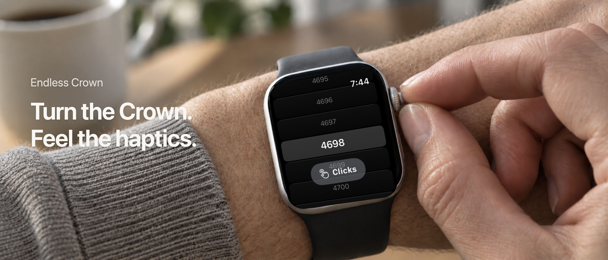
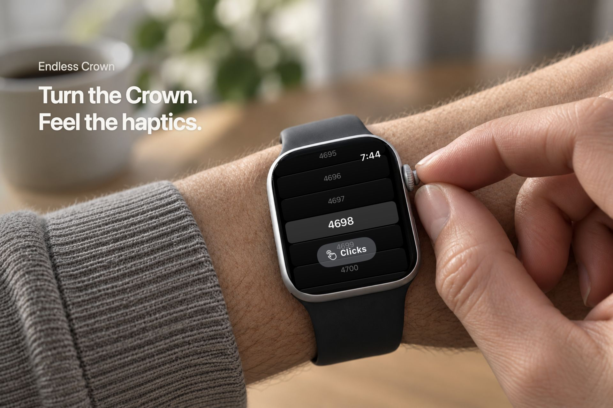
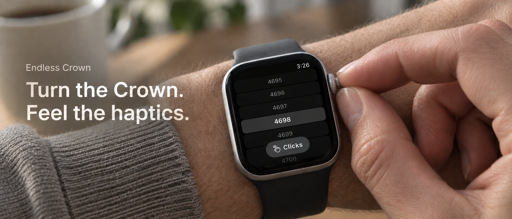

Do not upload or submit this package. Screen alignment and Watch hardware artifacts were rejected. The earlier 4698 version is selected again.
Authentic released-app screen at 4698, with native editable headlines over the selected lifestyle art direction.
Provenance and recovery notes · Upload ZIP



The original candidates, original exports, and existing six Store screenshots remain preserved. Upload status and native previews require live App Store Connect verification.